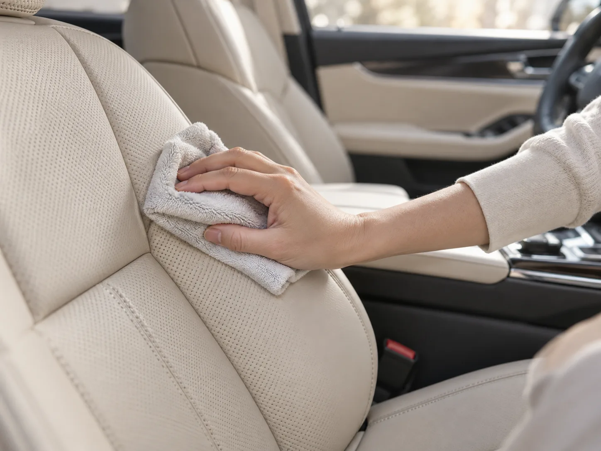
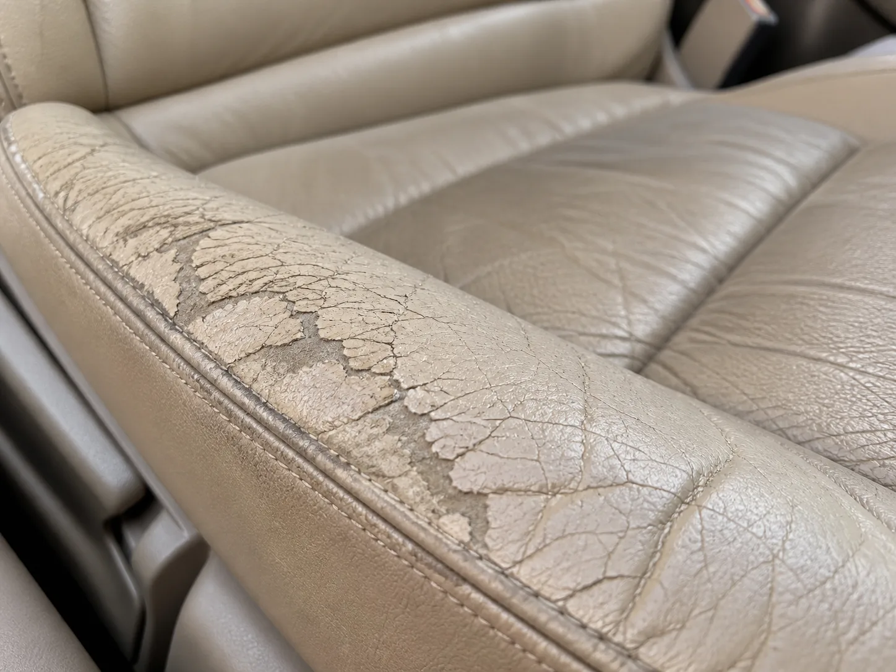
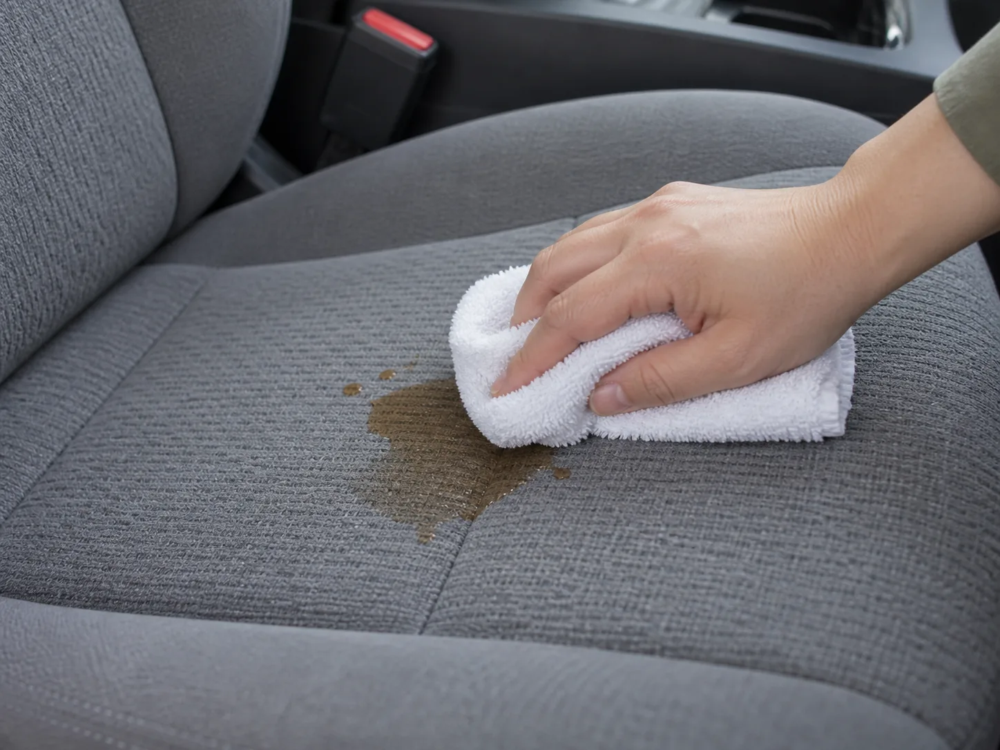
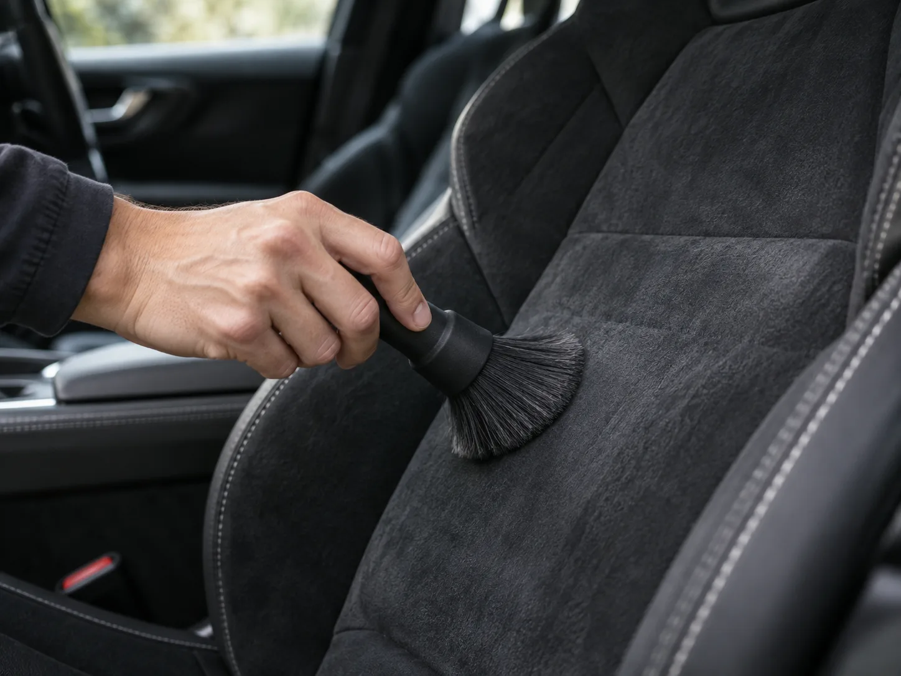

▲ 가죽시트는 물이 아니라 전용 클리너와 중성 세제로 관리해야 한다
"물티슈로 매일 닦아줬는데 왜 시트가 이렇게 갈라졌을까요." 온라인 커뮤니티와 정비 게시판에는 이런 하소연이 꾸준히 올라온다. 원인은 대개 하나다. 알코올과 방부제가 든 일반 물티슈로 가죽시트를 반복해서 닦으면 표면 코팅층이 서서히 벗겨지고, 수분이 마르는 과정에서 강한 마찰까지 더해지면 가죽이 수축하며 쩍쩍 갈라진다. 반대로 알칸타라 스티어링휠 커버나 시트에 가죽용 크림·컨디셔너를 발랐다가 표면에 얼룩덜룩한 자국만 남기고 후회하는 사례도 흔하다. 가죽, 패브릭(직물), 알칸타라는 겉보기엔 비슷한 '시트 소재'지만 세척 원리 자체가 다르다. 소재를 착각한 관리는 얼룩을 지우려다 오히려 시트를 망가뜨리는 결과로 이어진다.
1. 왜 소재마다 관리법이 완전히 다를까
천연가죽은 동물 가죽을 무두질해 만든 소재라 물과 만나면 유분이 빠져나가면서 건조해지고, 마르는 과정에서 갈라짐이 생긴다. 그래서 물청소보다 전용 클리너와 보습 컨디셔너 중심의 관리가 필요하다. 반면 패브릭(직물)은 섬유 사이로 수분과 이물질이 빠르게 스며드는 구조라, 얼룩이 생기면 최대한 빨리 대응하는 '속도'가 관건이다. 물을 많이 써서 세척하면 쿠션 스펀지까지 수분을 머금어 축축한 상태가 오래가고, 이 상태로 방치하면 곰팡이 냄새로 이어질 위험이 크다. 알칸타라는 극세사를 촘촘히 심어 스웨이드 질감을 낸 인공 소재로, 온수 세탁기 세척과 전용 세제 사용이 가능하지만 드라이클리닝 용제나 염소 표백제에는 취약하다. 세 소재의 이런 근본적인 차이를 표로 정리하면 다음과 같다.
| 소재 | 세척 원리 | 금지 세제·도구 | 권장 관리 주기 |
|---|---|---|---|
| 천연가죽 | 수분·마찰에 약함, 유분 보충이 핵심 | 일반 물티슈, 강산성·강알칼리 세제, 다량의 알코올 세정제 | 가죽 전용 보호제 최소 연 1회, 얼룩은 즉시 마른 천 처리 |
| 패브릭(직물) | 섬유가 액체를 빠르게 흡수, 건조 속도가 관건 | 문지르는 세척(얼룩 확산), 축축한 상태로 방치 | 얼룩 발생 즉시 대응, 곰팡이·세균 제거제 월 1회 안팎 |
| 알칸타라 | 극세사 스웨이드 질감, 전용 세제·약 30도 온수에 강함 | 드라이클리닝 용제(트리클로로에틸렌), 염소 표백제, 스팀기 접촉 | 먼지 브러시질 수시, 전용 세제 세척은 오염 시 |
2. 가죽시트 — 물이 아니라 '유분'으로 관리한다

▲ 잘못된 세제와 반복된 물기 접촉은 가죽 표면을 이렇게 갈라지게 만든다 ⓒ AI 생성 이미지
천연가죽 시트에 음료나 물을 흘렸다면 가장 먼저 마른 천으로 가볍게 눌러 닦아내고, 남은 자국은 가죽 전용 클리너를 부드러운 극세사 천에 묻혀 문지르지 않고 닦아낸다. 일반 세정제를 쓸 수밖에 없는 상황이라면 반드시 중성 세제나 알코올이 소량만 함유된 순한 제품을 골라야 한다. 강한 산성·알칼리성 세제나 알코올이 많이 든 제품은 변색과 표면 벗겨짐을 유발한다. 인조가죽(레자)은 상대적으로 관리가 쉬워 물티슈나 실내 세정제로 닦고 마른 수건으로 물기를 제거하면 되지만, 천연가죽용 보호제를 인조가죽에 쓰면 표면이 미끄러워질 수 있으니 서로 섞어 쓰지 않는 게 좋다. 타공(펀칭) 가공된 가죽은 구멍 사이로 크림형 제품이 끼면 지저분해지므로 스프레이나 액상형 제품을 쓰는 편이 안전하다.
가죽 관리에서 가장 중요한 것은 '보습'이다. 최소 연 1회는 가죽 컨디셔너나 전용 보호제를 발라 유분을 보충해야 갈라짐을 막을 수 있다. 여름철 직사광선에 오래 노출되면 가죽이 더 빨리 건조해지므로 그늘 주차나 창문 선팅도 실질적인 관리 수단이다. 현대트랜시스 시트 관리법 자세히 보기
3. 패브릭 시트 — 얼룩은 '문지르지 말고 두드려야' 지워진다

▲ 패브릭 얼룩은 힘줘 문지르는 순간 섬유 깊숙이 번진다 ⓒ AI 생성 이미지
패브릭(직물) 시트에 음료나 음식물을 흘렸다면 반사적으로 문질러 닦고 싶은 마음이 들지만, 이는 얼룩을 섬유 깊숙이 밀어 넣는 최악의 대응이다. 마른 수건이나 휴지로 얼룩 위를 꾹 눌러 수분을 최대한 흡수한 뒤, 두드리듯 눌러 닦아야 번짐을 막을 수 있다. 패브릭 얼룩은 크게 유분(오일) 얼룩, 탄닌(커피·차) 얼룩, 단백질(음식물) 얼룩으로 나뉘고 성분이 다른 만큼 세제도 다르게 골라야 하지만, 공통적으로는 중성세제를 물에 희석해 소량만 사용하고 곧바로 마른 수건으로 다시 눌러 물기를 걷어내는 순서가 기본이다.
패브릭 시트에서 가장 큰 함정은 '세척 후 방치'다. 물을 많이 써서 세척하면 시트 쿠션의 스펀지까지 수분을 머금는데, 이 상태로 계속 밀폐된 차 안에 두면 곰팡이가 번식해 꿉꿉한 냄새가 올라온다. 세척 직후에는 창문을 열어 환기하고, 선풍기나 드라이기 약풍으로 통풍을 도우며 직사광선보다는 그늘에서 완전히 말려야 한다.
4. 알칸타라 — 전용 세제 없인 손대지 않는 게 낫다

▲ 알칸타라는 먼지를 털어내는 브러시질만으로도 대부분의 관리가 끝난다 ⓒ AI 생성 이미지
알칸타라는 스포츠 시트나 스티어링휠 커버에 주로 쓰이는 극세사 스웨이드 소재로, 가죽과 패브릭 중간쯤의 관리법을 요구한다. Alcantara 공식 안내에 따르면 탈부착이 가능한 시트 커버는 약 섭씨 30도의 물과 부드러운 세제로 세탁기 세척까지 가능하다. 다만 벨크로(찍찍이) 부착 부위가 있다면 세탁 중 알칸타라 표면이 쓸리지 않도록 반드시 덮개로 가려야 한다. 전용 세제가 없을 때는 얼룩 종류에 따라 물이나 레몬즙, 순수 에탄올로 대체할 수 있지만, 드라이클리닝 시 트리클로로에틸렌 같은 용제는 소재를 손상시키므로 사용하면 안 되고 스팀 세척기 접촉도 피해야 한다. 세척 후에는 통풍이 잘되는 곳에서 자연건조한 다음, 완전히 마르면 부드러운 브러시로 결을 살려 솔질해줘야 스웨이드 특유의 질감이 되살아난다.
차량에 장착된 상태에서는 세탁기 세척이 불가능한 만큼, 평소 먼지떨이용 부드러운 브러시로 자주 털어주고 진한 얼룩이 생겼을 때만 전용 세제를 소량 사용하는 것이 가장 안전한 방식이다. Alcantara 공식 세척 안내 보기
5. 시트 냄새, 원인부터 다르면 제거법도 다르다
얼룩과 별개로 시트에서 올라오는 냄새는 원인에 따라 해법이 갈린다. 담배 연기의 미세 입자는 시트 원단과 내장재 섬유 깊숙이 침투해 환기만으로는 잘 빠지지 않고, 시간이 지나면 산화되며 오히려 냄새가 강해진다. 패스트푸드 포장지나 흘린 음료, 과자 부스러기가 시트 틈새나 매트 아래 남으면 세균이 번식해 악취를 낸다. 습기와 곰팡이 냄새는 에어컨 증발기(에바포레이터)에서 시작해 실내 전체로 퍼지는 경우가 많고, 앞서 설명한 것처럼 패브릭 시트를 물로 세척한 뒤 제대로 말리지 않아도 같은 냄새가 난다.
| 원인 | 제거법 |
|---|---|
| 담배 냄새 | 섬유 깊숙이 침투해 환기만으론 부족, 훈증 캔이나 전문 탈취 서비스 병행 |
| 음식물·음료 냄새 | 베이킹파우더(베이킹소다)를 시트에 뿌려 2~3시간 방치 후 청소기로 제거 |
| 습기·곰팡이 냄새 | 차 안에 숯 비치, 맑은 날 문·창문을 열어 충분히 환기 및 건조 |
| 에어컨 냄새(공통 원인) | 에어컨 필터·증발기 곰팡이 여부 점검, 연 1~2회 실내 탈취 훈증 캔 사용 |
냄새 제거의 핵심은 향으로 덮는 게 아니라 원인을 제거하는 것이다. 방향제는 임시방편일 뿐이고, 시트 소재별 올바른 세척과 완전 건조, 정기적인 환기가 결합돼야 냄새가 다시 올라오지 않는다.
6. 소재 착각 없이 관리하는 5단계 체크리스트
가죽·패브릭·알칸타라는 서로 다른 원리로 오염되고 서로 다른 방식으로 손상된다. 내 차 시트가 어떤 소재인지부터 정확히 확인하는 것이 첫 단추다. 아래 체크리스트로 소재를 착각한 관리를 예방할 수 있다.
| 단계 | 확인 사항 |
|---|---|
| 1 | 취급설명서나 시트 재질 표기로 가죽·패브릭·알칸타라 여부 확인 |
| 2 | 가죽은 물티슈·강산성 세제 금지, 전용 클리너와 중성세제만 사용 |
| 3 | 패브릭은 얼룩 발생 즉시 두드려 흡수, 문지르지 않기 |
| 4 | 알칸타라는 전용 세제 없이는 물·일반세제 세척 자제, 브러시 관리 우선 |
| 5 | 세척 후에는 반드시 완전 건조·환기해 곰팡이 냄새 재발 차단 |
당장 얼룩을 지우는 것보다 중요한 건 '내 시트가 어떤 소재인지'를 먼저 아는 일이다. 소재를 알고 나면 관리법은 의외로 단순하다.